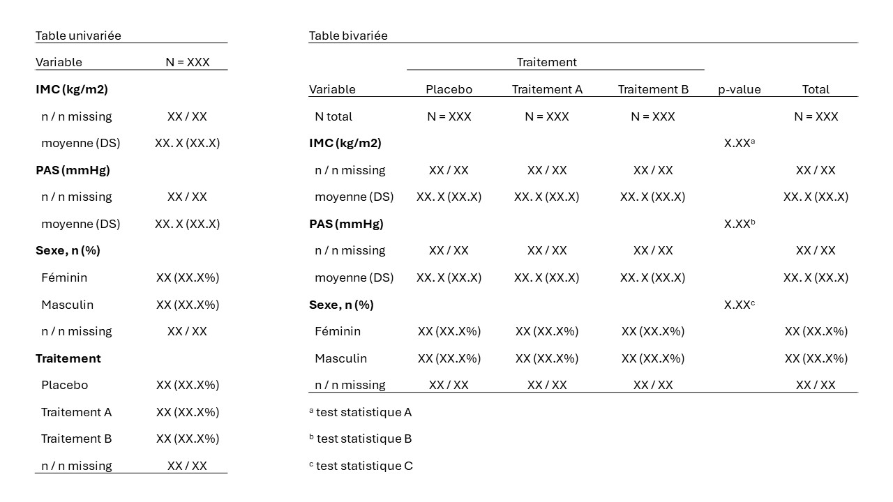

Chapter 7 Tableaux
Dans ce chapitre, nous présenterons quelques packages permettant d’obtenir des tables descriptives complètes, faciles à mettre en forme pour les intégrer dans un rapport d’analyse.
7.1 Base d’exemple pour une analyse uni- et bivariée
Nous allons utiliser la base df_1 déjà utilisées au sein de laquelle nous allons créer quelques données manquantes pour corser les choses !
rm(list=ls())
## Import des données
df_1 <- read.csv2("data/df_1.csv")
meta_df_1 <- read.csv2("data/meta_df_1.csv")
# pour chaque variable, 10% des valeurs sont remplacées au hasard par des manquants
set.seed(6543)
df_1miss <- df_1
for (i in 2:ncol(df_1miss)) {
df_1miss[[i]] <- ifelse(rbinom(n = nrow(df_1miss), size = 1, prob = 0.10) == 1,
NA, df_1miss[[i]])
}
summary(df_1miss)## subjid sex imc trait
## Min. : 1.00 Min. :0.0000 Min. :15.40 Min. :1.000
## 1st Qu.: 75.75 1st Qu.:0.0000 1st Qu.:22.20 1st Qu.:1.000
## Median :150.50 Median :1.0000 Median :24.50 Median :2.000
## Mean :150.50 Mean :0.5054 Mean :24.36 Mean :1.906
## 3rd Qu.:225.25 3rd Qu.:1.0000 3rd Qu.:26.30 3rd Qu.:3.000
## Max. :300.00 Max. :1.0000 Max. :32.20 Max. :3.000
## NA's :23 NA's :37 NA's :33
## pas
## Min. : 92.0
## 1st Qu.:125.0
## Median :138.0
## Mean :137.2
## 3rd Qu.:149.0
## Max. :177.0
## NA's :33# on va créer des variables qualitatives au format factor pour le sexe et traitement
df_1miss$sexL <- factor(df_1miss$sex,
labels = meta_df_1$labs[meta_df_1$var == "sex"])
df_1miss$traitL <- factor(df_1miss$trait,
labels = meta_df_1$labs[meta_df_1$var == "trait"])
## pensez à vérifier que le recodage est correct
# table(df_1miss$sexL, df_1miss$sex)
# table(df_1miss$traitL, df_1miss$trait)
# mise à jour de la base de méta données
meta_df_1 <- rbind(meta_df_1,
data.frame(var = "sexL",
label = meta_df_1$label[meta_df_1$var == "sex"],
id_labs = names(table(as.numeric(df_1miss$sexL))),
code_labs = as.numeric(names(table(as.numeric(df_1miss$sexL)))),
labs = levels(df_1miss$sexL)))
meta_df_1 <- rbind(meta_df_1,
data.frame(var = "traitL",
label = meta_df_1$label[meta_df_1$var == "trait"],
id_labs = names(table(as.numeric(df_1miss$traitL))),
code_labs = as.numeric(names(table(as.numeric(df_1miss$traitL)))),
labs = levels(df_1miss$traitL)))L’objectif sera de faire une table descriptive univariée de l’IMC, de la PAS, du sexe et du traitement. Puis, on fera une table bivariée de l’IMC, de la PAS et du sexe en fonction des groupes de traitement.
7.2 Package table1
Le package table1 permet de mettre facilement en forme des tableaux de statistiques descriptives uni- ou bivariées que l’on peut ensuite copier-coller dans un rapport (ou directement l’intégrer dans un rapport écrit avec Rmarkdown ou Quarto).
7.2.1 Tables univariées
Une table univariée peut être obtenue avec une écriture au format formula, où les variables à décrire sont à gauche d’un signe ~ espacés de +. Voici un exmple ci-dessous
library(table1)
## Pour une analyse descriptive univariée
table1(~ imc + pas + traitL + sexL, data = df_1miss)| Overall (N=300) |
|
|---|---|
| imc | |
| Mean (SD) | 24.4 (3.04) |
| Median [Min, Max] | 24.5 [15.4, 32.2] |
| Missing | 37 (12.3%) |
| pas | |
| Mean (SD) | 137 (16.9) |
| Median [Min, Max] | 138 [92.0, 177] |
| Missing | 33 (11.0%) |
| traitL | |
| Placebo | 104 (34.7%) |
| Traitement A | 84 (28.0%) |
| Traitement B | 79 (26.3%) |
| Missing | 33 (11.0%) |
| sexL | |
| Féminin | 137 (45.7%) |
| Masculin | 140 (46.7%) |
| Missing | 23 (7.7%) |
A noter que par défaut, les données manquantes des variables catégorielles sont considérées comme une catégorie à part entière, et les pourcentages sont calculés en prenant en compte les manquants. Par exemple pour le sexe, 45.7% + 46.7% + 7.7% = 100% en prenant en compte les 7.7% de données manquantes.
Généralement pour calculer les pourcentages, on préfèrera exclure les données manquantes.
Le package table1 permet d’ajouter un nom de variable plus explicite aux variables :
## la fonction label() permet d'ajouter un nom de variable sous forme d'attribut
label(df_1miss$sexL) <- meta_df_1$label[meta_df_1$var == "sexL"][1]
label(df_1miss$traitL) <- meta_df_1$label[meta_df_1$var == "traitL"][1]
label(df_1miss$imc) <- meta_df_1$label[meta_df_1$var == "imc"]
label(df_1miss$pas) <- meta_df_1$label[meta_df_1$var == "pas"]
attributes(df_1miss$sexL)## $levels
## [1] "Féminin" "Masculin"
##
## $class
## [1] "factor"
##
## $label
## [1] "Sexe"## $label
## [1] "IMC (kg/m²)"## si on relance la fonction, les noms de variables explicites sont visibles
table1(~ imc + pas + traitL + sexL, data = df_1miss)| Overall (N=300) |
|
|---|---|
| IMC (kg/m²) | |
| Mean (SD) | 24.4 (3.04) |
| Median [Min, Max] | 24.5 [15.4, 32.2] |
| Missing | 37 (12.3%) |
| PAS (mmHg) | |
| Mean (SD) | 137 (16.9) |
| Median [Min, Max] | 138 [92.0, 177] |
| Missing | 33 (11.0%) |
| Traitement | |
| Placebo | 104 (34.7%) |
| Traitement A | 84 (28.0%) |
| Traitement B | 79 (26.3%) |
| Missing | 33 (11.0%) |
| Sexe | |
| Féminin | 137 (45.7%) |
| Masculin | 140 (46.7%) |
| Missing | 23 (7.7%) |
Il est possible de choisir plus spécifiquement quels paramètres afficher. Pour plus d’information sur les paramètres de distributions disponibles avec table1, vous pouvez chercher dans l’aide ?stats.default.
## function (x, ...)
## {
## with(stats.apply.rounding(stats.default(x, ...), ...), c("",
## `Mean (SD)` = sprintf("%s (%s)", MEAN, SD), `Median [Min, Max]` = sprintf("%s [%s, %s]",
## MEDIAN, MIN, MAX)))
## }
## <bytecode: 0x000001c606e972a0>
## <environment: namespace:table1>## function (x, ..., na.is.category = TRUE)
## {
## c("", sapply(stats.apply.rounding(stats.default(x, ...),
## ...), function(y) with(y, sprintf("%s (%s%%)", FREQ,
## if (na.is.category) PCT else PCTnoNA))))
## }
## <bytecode: 0x000001c606ec3508>
## <environment: namespace:table1>On peut créer de nouvelles fonctions de rendu en prenant ces deux fonctions pour modèle. Ci-dessous, on va créer une fonction de rendu pour les variables quantitatives qui ne donne que la moyenne et la déviation standard entre parenthèses.
Puis, on va créer une fonction de rendu pour les variables catégorielles qui calcule les pourcentages en excluant les données manquantes.
# fonction pour afficher uniquement la moyenne +/- écart type pour les variables
# quantitatives
render_var_quanti <- function(x) {
with(stats.default(x),
c("",
`Mean (SD)` = sprintf("%0.1f (%0.1f)", MEAN, SD)))
}
# fonction pour exclure les données manquantes pour le calcul des pourcentages
render_var_quali <- function (x, ..., na.is.category = FALSE) { # FALSE remplace TRUE
c("",
sapply(stats.apply.rounding(stats.default(x, ...), ...),
function(y) with(y, sprintf("%s (%s%%)", FREQ,
if (na.is.category) PCT else PCTnoNA))))
}
## on applique ensuite ces deux fonctions de rendus dans la fonction table1
table1(~ imc + pas + traitL + sexL,
data = df_1miss,
render.continuous = render_var_quanti,
render.categorical = render_var_quali)| Overall (N=300) |
|
|---|---|
| IMC (kg/m²) | |
| Mean (SD) | 24.4 (3.0) |
| Missing | 37 (12.3%) |
| PAS (mmHg) | |
| Mean (SD) | 137.2 (16.9) |
| Missing | 33 (11.0%) |
| Traitement | |
| Placebo | 104 (39.0%) |
| Traitement A | 84 (31.5%) |
| Traitement B | 79 (29.6%) |
| Missing | 33 (11.0%) |
| Sexe | |
| Féminin | 137 (49.5%) |
| Masculin | 140 (50.5%) |
| Missing | 23 (7.7%) |
A présent, on voit que pour le sexe, la somme 49.5% + 50.5% = 100%, la catégorie des manquants n’est pas prise en compte pour le calcul des pourcentages.
7.2.2 Tables bivariées
Pour obtenir une table bivariée, on ajoute une barre verticale suivie d’une variable de format factor.
## Exemple de formule pour une table bivariée en fonction de traitL
table1(~ imc + pas + sexL | traitL, data = df_1miss)
# mais cet exemple ne fonctionne pas car la variable de stratification
# ne doit pas contenir de données manquante +++
## Il faut donc exclure les lignes avec un traitement manquant dans la base
table1(~ imc + pas + sexL | traitL,
data = subset(df_1miss, subset = !is.na(traitL)))
# la fonction subset a effacé les attributs "level" des noms de variables## Pour ne pas supprimer les attibuts de variables, il vaut mieux utiliser
## la fonction filter du tidyverse (qui conserve les attributs)
table1(~ imc + pas + sexL | traitL,
data = dplyr::filter(df_1miss, !is.na(traitL))) | Placebo (N=104) |
Traitement A (N=84) |
Traitement B (N=79) |
Overall (N=267) |
|
|---|---|---|---|---|
| IMC (kg/m²) | ||||
| Mean (SD) | 24.4 (2.84) | 24.7 (3.03) | 24.2 (3.53) | 24.4 (3.12) |
| Median [Min, Max] | 24.5 [17.0, 31.2] | 24.8 [15.4, 30.3] | 24.1 [16.1, 32.2] | 24.6 [15.4, 32.2] |
| Missing | 11 (10.6%) | 11 (13.1%) | 9 (11.4%) | 31 (11.6%) |
| PAS (mmHg) | ||||
| Mean (SD) | 143 (15.8) | 130 (16.2) | 137 (17.0) | 137 (17.1) |
| Median [Min, Max] | 142 [105, 177] | 130 [92.0, 161] | 138 [103, 177] | 138 [92.0, 177] |
| Missing | 17 (16.3%) | 9 (10.7%) | 7 (8.9%) | 33 (12.4%) |
| Sexe | ||||
| Féminin | 40 (38.5%) | 40 (47.6%) | 37 (46.8%) | 117 (43.8%) |
| Masculin | 58 (55.8%) | 40 (47.6%) | 30 (38.0%) | 128 (47.9%) |
| Missing | 6 (5.8%) | 4 (4.8%) | 12 (15.2%) | 22 (8.2%) |
Comme pour l’analyse univariée, on peut choisir de n’afficher que la moyenne et l’écart type pour les variables quantitatives et calculer les pourcentages en excluant les manquants pour les variables qualitatives.
table1(~ imc + pas + sexL | traitL,
data = dplyr::filter(df_1miss, !is.na(traitL)),
render.continuous = render_var_quanti,
render.categorical = render_var_quali) | Placebo (N=104) |
Traitement A (N=84) |
Traitement B (N=79) |
Overall (N=267) |
|
|---|---|---|---|---|
| IMC (kg/m²) | ||||
| Mean (SD) | 24.4 (2.8) | 24.7 (3.0) | 24.2 (3.5) | 24.4 (3.1) |
| Missing | 11 (10.6%) | 11 (13.1%) | 9 (11.4%) | 31 (11.6%) |
| PAS (mmHg) | ||||
| Mean (SD) | 143.1 (15.8) | 130.5 (16.2) | 137.2 (17.0) | 137.2 (17.1) |
| Missing | 17 (16.3%) | 9 (10.7%) | 7 (8.9%) | 33 (12.4%) |
| Sexe | ||||
| Féminin | 40 (40.8%) | 40 (50.0%) | 37 (55.2%) | 117 (47.8%) |
| Masculin | 58 (59.2%) | 40 (50.0%) | 30 (44.8%) | 128 (52.2%) |
| Missing | 6 (5.8%) | 4 (4.8%) | 12 (15.2%) | 22 (8.2%) |
Une des limites du package table1 est qu’il ne permet pas d’afficher une colonne de p-values pour donner les résultats de tests de comparaison bivariés.
7.3 Méthodes plus flexibles
Le package table1 permet d’obtenir des tables uni- et bivariées très faciement, mais il ne donne pas beaucoup de possibilité pour adatper la table à sa guise.
Pour obtenir des tables avec une plus grande liberté de présentation, on peut créer un tableau (data.frame) contenant exactement les résultats que l’on veut présenter.

Figure 7.1: Formats souhaités
7.3.1 Création d’une base de données pour une table univariée
7.3.1.1 Variables quantitatives
On va créer un tableau à 2 colonnes :
- la première colonne contiendra les noms de variables et les paramètres statistiques
- la deuxième colonne contiendra au format texte : les effectifs observés et manquants, ou la moyenne et l’écart type entre parenthèses.
# il faut calculer les effectifs observés (non manquants), les effectifs manquants,
# la moyenne et l'écart type :
N <- length(which(!is.na(df_1miss$imc)))
N_miss <- length(which(is.na(df_1miss$imc)))
moy <- mean(df_1miss$imc, na.rm = TRUE)
std <- sd(df_1miss$imc, na.rm = TRUE)
## puis on créé un data.frame à deux colonne contenant les résultats
## mis en forme selon la présentation souhaitée
tab_imc <- data.frame(var = c(meta_df_1$label[meta_df_1$var == "imc"],
"n / n missing",
"moyenne (DS)"),
stat= c("", # la première ligne de la colonne stat est vide
paste0(N, " / ", N_miss),
paste0(round(moy, digits = 1), " (",
round(std, digits = 1), ")")))
tab_imc## var stat
## 1 IMC (kg/m²)
## 2 n / n missing 263 / 37
## 3 moyenne (DS) 24.4 (3)Pour automatiser la création de cette table, on peut écrire une nouvelle fonction, comme dans l’exemple ci-dessous
# la fonction prend 3 arguments
tab_univ_quanti <- function(data, # le data frame
metadata, # la base de méta-données
variables) { # vecteur de noms de variables quanti
# la table associée à chaque variable sera stockée dans une liste
tab_list <- list() # créée une liste vide
for (i in variables) { # boucle pour chaque variable du vecteur variables
N <- length(which(!is.na(data[[i]])))
N_miss <- length(which(is.na(data[[i]])))
moyenne <- mean(data[[i]], na.rm = TRUE)
std <- sd(data[[i]], na.rm = TRUE)
tab_list[[i]] <- data.frame(var = c(metadata$label[metadata$var == i],
"n / n missing",
"moyenne (DS)"),
stat= c("", # la première ligne de la colonne stat est vide
paste0(N, " / ", N_miss),
paste0(round(moyenne, digits = 1), " (",
round(std, digits = 1), ")")))
}
# on commence par créer une table commune vide
tab_pooled <- data.frame(matrix("", ncol = 2, nrow = 0))
# on empile chaque table stockée dans la liste les unes après les autres
for(j in 1:length(tab_list)) {
tab_pooled <- rbind(tab_pooled, tab_list[[j]])
}
return(tab_pooled)
}
tab_quanti <- tab_univ_quanti(data = df_1miss, # le data frame
metadata = meta_df_1, # la base de méta-données
variables = c("imc", "pas")) # variables quantitatives
tab_quanti## var stat
## 1 IMC (kg/m²)
## 2 n / n missing 263 / 37
## 3 moyenne (DS) 24.4 (3)
## 4 PAS (mmHg)
## 5 n / n missing 267 / 33
## 6 moyenne (DS) 137.2 (16.9)7.3.1.2 Variables qualitatives
On va faire une table indiquant sur chaque ligne l’effectif et le pourcentage après exclusion des manquants. La dernière ligne contient les effectifs observés et manquants. Comme précédemment, la première colonne contiendra le nom de la variable et le nom des labels.
# On commence avec une table à 2 colonnes indiquant les effectifs et les pourcentages.
# Les pourcentages seront calculés en excluant les données manquantes
# (comme sous une hypothèse "missing completely at random" MCAR)
tab_sex_temp <- cbind(table(df_1miss$sexL, useNA = "no"),
prop.table(table(df_1miss$sexL, useNA = "no")))
tab_sex_temp## [,1] [,2]
## Féminin 137 0.4945848
## Masculin 140 0.5054152# La fonction paste0 peut être utilisée pour concaténer les 2 colonnes en un seul
# vecteur, avec une mise en forme des pourcentages entre parenthèses et 1 chiffre
# après la virgule
paste0(tab_sex_temp[,1], " (", round(tab_sex_temp[,2] * 100, digits = 1), "%)")## [1] "137 (49.5%)" "140 (50.5%)"tab_sex <- data.frame(var = c(meta_df_1$label[meta_df_1$var == "sexL"][1],
levels(df_1miss$sexL)),
stat= c("", # la première ligne de la colonne stat est vide
paste0(tab_sex_temp[,1],
" (",
round(tab_sex_temp[,2] * 100, digits = 1),
"%)")))
tab_sex <- rbind(tab_sex,
c("n / n missing",
paste0(length(which(!is.na(df_1miss$sexL))),
" / ",
length(which(is.na(df_1miss$sexL))))))
tab_sex## var stat
## 1 Sexe
## 2 Féminin 137 (49.5%)
## 3 Masculin 140 (50.5%)
## 4 n / n missing 277 / 23Comme pour les variables quantitatives, on peut créer une fonction pour automatiser la création de tables pour les variables qualitatives.
## Fonction pour automatiser la création de table pour les variables quali
tab_univ_quali <- function(data, # le data frame
metadata, # la base de méta-données
variables) { # vecteur de noms de variables quanti
# la table associée à chaque variable sera stockée dans une liste
tab_list <- list() # créée une liste vide
for (i in variables) { # boucle pour chaque variable du vecteur variables
N <- length(which(!is.na(data[[i]])))
N_miss <- length(which(is.na(data[[i]])))
tab_temp <- cbind(table(data[[i]], useNA = "no"),
prop.table(table(data[[i]], useNA = "no")))
tab_list[[i]] <- data.frame(var = c(paste0(metadata$label[metadata$var == i][1],
", n (%)"),
levels(data[[i]])),
stat= c("", # la première ligne de la colonne stat est vide
paste0(tab_temp[,1],
" (",
round(tab_temp[,2] * 100, digits = 1),
"%)")))
if (N_miss >= 1) { # s'il y a des manquants, on ajoute les effectifs observés
tab_list[[i]] <- rbind(tab_list[[i]],
c("n / n missing",
paste0(length(which(!is.na(data[[i]]))),
" / ",
length(which(is.na(data[[i]]))))))
}
}
# on commence par créer une table commune vide
tab_pooled <- data.frame(matrix("", ncol = 2, nrow = 0))
# on empile chaque table stockée dans la liste les unes après les autres
for(j in 1:length(tab_list)) {
tab_pooled <- rbind(tab_pooled, tab_list[[j]])
}
return(tab_pooled)
}
tab_quali <- tab_univ_quali(data = df_1miss, # le data frame
metadata = meta_df_1, # la base de méta-données
variables = c("sexL", "traitL"))
tab_quali## var stat
## 1 Sexe, n (%)
## 2 Féminin 137 (49.5%)
## 3 Masculin 140 (50.5%)
## 4 n / n missing 277 / 23
## 5 Traitement, n (%)
## 6 Placebo 104 (39%)
## 7 Traitement A 84 (31.5%)
## 8 Traitement B 79 (29.6%)
## 9 n / n missing 267 / 337.4 Package tinytable
On va combiner la table univariée des variables quantitatives et qualitatives.
tab_desc <- rbind(tab_quanti, tab_quali)
# on va changer les noms de colonnes
# en indiquant les effectifs totaux dans la colonne des résultats statistiques
names(tab_desc) <- c("Variables",
paste0("N = ", nrow(df_1miss)))
tab_desc## Variables N = 300
## 1 IMC (kg/m²)
## 2 n / n missing 263 / 37
## 3 moyenne (DS) 24.4 (3)
## 4 PAS (mmHg)
## 5 n / n missing 267 / 33
## 6 moyenne (DS) 137.2 (16.9)
## 7 Sexe, n (%)
## 8 Féminin 137 (49.5%)
## 9 Masculin 140 (50.5%)
## 10 n / n missing 277 / 23
## 11 Traitement, n (%)
## 12 Placebo 104 (39%)
## 13 Traitement A 84 (31.5%)
## 14 Traitement B 79 (29.6%)
## 15 n / n missing 267 / 33Le package tinytable permet d’obtenir rapidement et simplement des tables mises en forme pour être copiées-collées dans un rapport d’analyse (ou une sortie Rmarkdown ou Quarto).
Le package est simple, avec peu de fonctions à connaître pour être utilisé et ne dépend pas d’autres packages R.
| Variables | N = 300 |
|---|---|
| IMC (kg/m²) | |
| n / n missing | 263 / 37 |
| moyenne (DS) | 24.4 (3) |
| PAS (mmHg) | |
| n / n missing | 267 / 33 |
| moyenne (DS) | 137.2 (16.9) |
| Sexe, n (%) | |
| Féminin | 137 (49.5%) |
| Masculin | 140 (50.5%) |
| n / n missing | 277 / 23 |
| Traitement, n (%) | |
| Placebo | 104 (39%) |
| Traitement A | 84 (31.5%) |
| Traitement B | 79 (29.6%) |
| n / n missing | 267 / 33 |
On peut facilement modifier le style de certaines cellules (cf ?style_tt pour plus d’informations).
# Ci-dessous, les celulles avec les noms de variables s'affichent en gras. (bold)
# et une indentation vers la droite est ajoutée pour les noms des paramètres
tt(tab_desc) |>
style_tt(
i = which(tab_desc[,2] == ""), # sélectionner les lignes sans statistiques
j = 1, # sélectionne la 1ère colonne
bold = TRUE) |>
style_tt(
i = which(tab_desc[,2] != ""), # sélectionner les lignes avec statistiques
j = 1,
indent = 2 # ajoute une indentation vers la droite de 2 unités
)| Variables | N = 300 |
|---|---|
| IMC (kg/m²) | |
| n / n missing | 263 / 37 |
| moyenne (DS) | 24.4 (3) |
| PAS (mmHg) | |
| n / n missing | 267 / 33 |
| moyenne (DS) | 137.2 (16.9) |
| Sexe, n (%) | |
| Féminin | 137 (49.5%) |
| Masculin | 140 (50.5%) |
| n / n missing | 277 / 23 |
| Traitement, n (%) | |
| Placebo | 104 (39%) |
| Traitement A | 84 (31.5%) |
| Traitement B | 79 (29.6%) |
| n / n missing | 267 / 33 |
7.5 Préparation d’un tableau bivarié avec p-values
7.5.1 Préparation d’un data.frame
Pour cette analyse, on va se restreindre à la base de 267 patients sans données manquantes sur le traitement.
##
## Placebo Traitement A Traitement B <NA>
## 104 84 79 33# on voit que la variable traitement est manquante chez 33 participants :
# on exclut ces 33 participants de l'analyse bivariéePour croiser l’IMC et la PAS en fonction du traitement, on va créer une fonction qui récupère sous forme de vecteur :
- les effectifs observés et manquants (n / n missing)
- la moyenne et l’écart type (moyenne (DS)).
mean_sd_fct <- function(x, dig = 1, remove_miss = TRUE) {
n_n_miss <- paste0(length(which(!is.na(x))),
" / ",
length(which(is.na(x))))
mean_sd <- paste0(round(mean(x, na.rm = remove_miss), digits = dig),
" (",
round(sd(x, na.rm = remove_miss), digits = dig),
")")
return(c(n_n_miss, mean_sd))
}
## exemples de résultat obtenu avec la fonction mean_sd_fct()
mean_sd_fct(x = df_1miss[!is.na(df_1miss$traitL), "imc"],
dig = 1,
remove_miss = TRUE)## [1] "236 / 31" "24.4 (3.1)"tapply(X = df_1miss$imc,
INDEX = df_1miss$traitL,
FUN = mean_sd_fct, # fonction à utiliser sur X
dig = 1, remove_miss = TRUE) # arguments de la fonction ## $Placebo
## [1] "93 / 11" "24.4 (2.8)"
##
## $`Traitement A`
## [1] "73 / 11" "24.7 (3)"
##
## $`Traitement B`
## [1] "70 / 9" "24.2 (3.5)"Préparation d’une table croisant le traitement avec :
- l’IMC
- la PAS
- le sexe
# Les effectifs totaux seront affichés sur la première ligne
df_results <- data.frame(var = c("N total",
meta_df_1$label[meta_df_1$var == "imc"],
"n / n missing",
"moyenne (DS)",
meta_df_1$label[meta_df_1$var == "pas"],
"n / n missing",
"moyenne (DS)",
paste0(meta_df_1$label[meta_df_1$var == "sexL"][1], ", n (%)"),
levels(df_1miss$sexL),
"n / n missing"))
df_results <- data.frame(df_results,
matrix("", ncol = length(levels(df_1miss$traitL)) + 2,
nrow = nrow(df_results)))
names(df_results) <- c("Variable", levels(df_1miss$traitL), "p-value", "Total")
df_results## Variable Placebo Traitement A Traitement B p-value Total
## 1 N total
## 2 IMC (kg/m²)
## 3 n / n missing
## 4 moyenne (DS)
## 5 PAS (mmHg)
## 6 n / n missing
## 7 moyenne (DS)
## 8 Sexe, n (%)
## 9 Féminin
## 10 Masculin
## 11 n / n missingEnsuite on remplit le contenu du tableau (à noter qu’on va exclure des analyses les données manquantes concernant le traitement).
## Ligne N total
n_obs_tot <- table(df_1miss$traitL, useNA = "no")
df_results[1,c("Placebo",
"Traitement A",
"Traitement B")] <- paste0("N = ", n_obs_tot)
df_results[1, "Total"] <- paste0("N = ", sum(n_obs_tot))
df_results## Variable Placebo Traitement A Traitement B p-value Total
## 1 N total N = 104 N = 84 N = 79 N = 267
## 2 IMC (kg/m²)
## 3 n / n missing
## 4 moyenne (DS)
## 5 PAS (mmHg)
## 6 n / n missing
## 7 moyenne (DS)
## 8 Sexe, n (%)
## 9 Féminin
## 10 Masculin
## 11 n / n missing## Lignes de l'IMC en fonction du traitement
imc_by_trait <- tapply(X = df_1miss$imc,
INDEX = df_1miss$traitL,
FUN = mean_sd_fct, # fonction à utiliser sur X
dig = 1, remove_miss = TRUE)
df_results[3:4, c("Placebo")] <- imc_by_trait$Placebo
df_results[3:4, c("Traitement A")] <- imc_by_trait$`Traitement A`
df_results[3:4, c("Traitement B")] <- imc_by_trait$`Traitement B`
# note : pour avoir des effectifs cohérents dans la colonne total,
# les analyses doivent être réalisée dans le sous-ensemble de données
# sans manquants concernant le traitement +++
df_results[3:4, c("Total")] <- mean_sd_fct(x = subset(df_1miss,
subset = !is.na(traitL))$imc,
dig = 1,
remove_miss = TRUE)
anova_imc_by_traitL <- anova(aov(imc ~ traitL, data = df_1miss))
anova_imc_by_traitL$`Pr(>F)` # [1] 0.5259026 NA## [1] 0.5259026 NAdf_results[3,"p-value"] <- paste0(round(anova_imc_by_traitL$`Pr(>F)`[1], digits = 2),
"<sup>a") # code html pour afficher "a" en exposant
df_results## Variable Placebo Traitement A Traitement B p-value Total
## 1 N total N = 104 N = 84 N = 79 N = 267
## 2 IMC (kg/m²)
## 3 n / n missing 93 / 11 73 / 11 70 / 9 0.53<sup>a 236 / 31
## 4 moyenne (DS) 24.4 (2.8) 24.7 (3) 24.2 (3.5) 24.4 (3.1)
## 5 PAS (mmHg)
## 6 n / n missing
## 7 moyenne (DS)
## 8 Sexe, n (%)
## 9 Féminin
## 10 Masculin
## 11 n / n missing# Lignes de la PAS en fonction du traitement
pas_by_trait <- tapply(X = df_1miss$pas,
INDEX = df_1miss$traitL,
FUN = mean_sd_fct, # fonction à utiliser sur X
dig = 1, remove_miss = TRUE)
df_results[6:7, c("Placebo")] <- pas_by_trait$Placebo
df_results[6:7, c("Traitement A")] <- pas_by_trait$`Traitement A`
df_results[6:7, c("Traitement B")] <- pas_by_trait$`Traitement B`
df_results[6:7, c("Total")] <- mean_sd_fct(x = subset(df_1miss,
subset = !is.na(traitL))$pas,
dig = 1,
remove_miss = TRUE)
anova_pas_by_traitL <- anova(aov(pas ~ traitL, data = df_1miss))
anova_pas_by_traitL$`Pr(>F)` # [1] 1.079829e-05 NA## [1] 1.079829e-05 NAdf_results[6,"p-value"] <- "<0.0001<sup>a"
## On complète la table pour le sexe
# on commence par décrire les effectifs avec les manquants
# pour calculer les effectifs par groupe de traitement
table(df_1miss$sexL, df_1miss$traitL, useNA = "ifany")##
## Placebo Traitement A Traitement B <NA>
## Féminin 40 40 37 20
## Masculin 58 40 30 12
## <NA> 6 4 12 1# total des 3 premières colonnes, en comptant les manquants
tot_trait <- colSums(table(df_1miss$sexL, df_1miss$traitL, useNA = "ifany")[,1:3])
# nombre de manquants
n_miss_sex <- table(df_1miss$sexL, df_1miss$traitL, useNA = "ifany")[3,1:3]
# total des effectifs non-manquants
n_obs_sex <- colSums(table(df_1miss$sexL, df_1miss$traitL, useNA = "no"))
# Effectifs et pourcentages calculés en excluant les manquants (hypothèse MCAR)
tab_sex_n <- table(df_1miss$sexL, df_1miss$traitL, useNA = "no")
tab_sex_pct <- prop.table(table(df_1miss$sexL, df_1miss$traitL, useNA = "no"),
margin = 2) # pour les pourcentages en colonnes
tab_sexL_by_traitL <- paste0(tab_sex_n,
" (",
round(tab_sex_pct * 100, digits = 1),
"%)")
dim(tab_sexL_by_traitL) <- dim(tab_sex_n)
tab_sexL_by_traitL## [,1] [,2] [,3]
## [1,] "40 (40.8%)" "40 (50%)" "37 (55.2%)"
## [2,] "58 (59.2%)" "40 (50%)" "30 (44.8%)"# On complète la table bivariée
df_results[9:10,2:4] <- tab_sexL_by_traitL
df_results[11, 2:4] <- paste0(n_obs_sex, " / ", n_miss_sex)
# colonne Total
df_results[9:10,"Total"] <- paste0(rowSums(tab_sex_n),
" (",
round(prop.table(rowSums(tab_sex_n)) * 100,
digits = 1),
"%)")
df_results[11,"Total"] <- paste0(sum(n_obs_sex), " / ", sum(n_miss_sex))
# colonne p-value
chi2_sex_trait <- chisq.test(table(df_1miss$sexL, df_1miss$traitL, useNA = "no"))
df_results[8, "p-value"] <- paste0(round(chi2_sex_trait$p.value, digits = 2),
"<sup>b")
df_results## Variable Placebo Traitement A Traitement B p-value
## 1 N total N = 104 N = 84 N = 79
## 2 IMC (kg/m²)
## 3 n / n missing 93 / 11 73 / 11 70 / 9 0.53<sup>a
## 4 moyenne (DS) 24.4 (2.8) 24.7 (3) 24.2 (3.5)
## 5 PAS (mmHg)
## 6 n / n missing 87 / 17 75 / 9 72 / 7 <0.0001<sup>a
## 7 moyenne (DS) 143.1 (15.8) 130.5 (16.2) 137.2 (17)
## 8 Sexe, n (%) 0.17<sup>b
## 9 Féminin 40 (40.8%) 40 (50%) 37 (55.2%)
## 10 Masculin 58 (59.2%) 40 (50%) 30 (44.8%)
## 11 n / n missing 98 / 6 80 / 4 67 / 12
## Total
## 1 N = 267
## 2
## 3 236 / 31
## 4 24.4 (3.1)
## 5
## 6 234 / 33
## 7 137.2 (17.1)
## 8
## 9 117 (47.8%)
## 10 128 (52.2%)
## 11 245 / 227.5.2 Présentation avec tinytable
Comme pour la table d’analyse univarié, on peut utiliser le package tinytable pour présenter cette table bivariée
tt(df_results,
cap = "Table : Analyses bivariées",
notes = list(a = "Anova", b = "Chi-2")) |>
style_tt( # affiche les noms de variables en gras
i = which(df_results[,2] == ""),
j = 1,
bold = TRUE) |>
style_tt( # ajoute une indentation vers la droite d'une unité
i = which(df_results[,2] != ""),
j = 1,
indent = 1) |>
group_tt( # ajoute un nom de variable pour les 3 colonnes de traitements
j = list("Traitements" = 2:4))| Traitements | |||||
|---|---|---|---|---|---|
| Variable | Placebo | Traitement A | Traitement B | p-value | Total |
| a Anova | |||||
| b Chi-2 | |||||
| N total | N = 104 | N = 84 | N = 79 | N = 267 | |
| IMC (kg/m²) | |||||
| n / n missing | 93 / 11 | 73 / 11 | 70 / 9 | 0.53a | 236 / 31 |
| moyenne (DS) | 24.4 (2.8) | 24.7 (3) | 24.2 (3.5) | 24.4 (3.1) | |
| PAS (mmHg) | |||||
| n / n missing | 87 / 17 | 75 / 9 | 72 / 7 | <0.0001a | 234 / 33 |
| moyenne (DS) | 143.1 (15.8) | 130.5 (16.2) | 137.2 (17) | 137.2 (17.1) | |
| Sexe, n (%) | 0.17b | ||||
| Féminin | 40 (40.8%) | 40 (50%) | 37 (55.2%) | 117 (47.8%) | |
| Masculin | 58 (59.2%) | 40 (50%) | 30 (44.8%) | 128 (52.2%) | |
| n / n missing | 98 / 6 | 80 / 4 | 67 / 12 | 245 / 22 | |
gt gtsummary (basé sur gt)